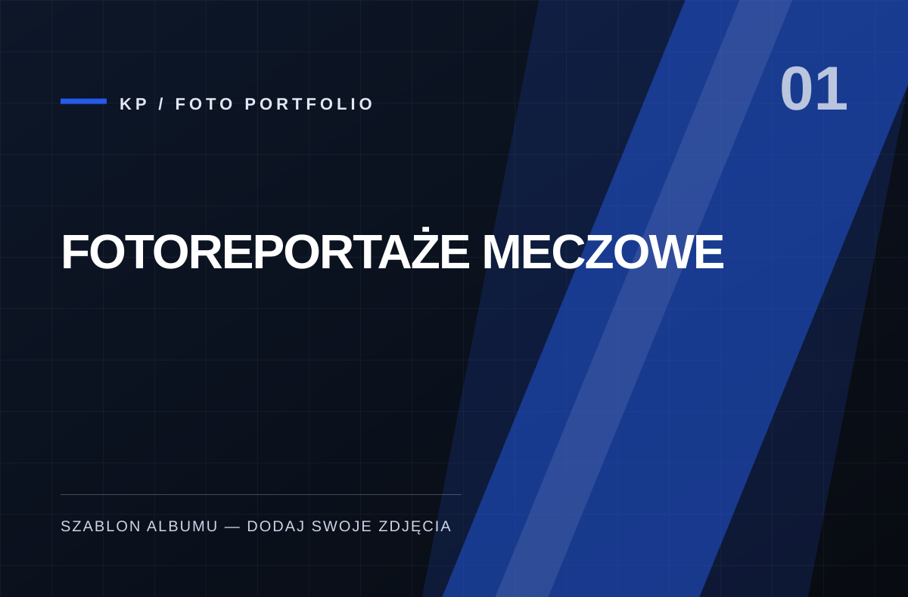
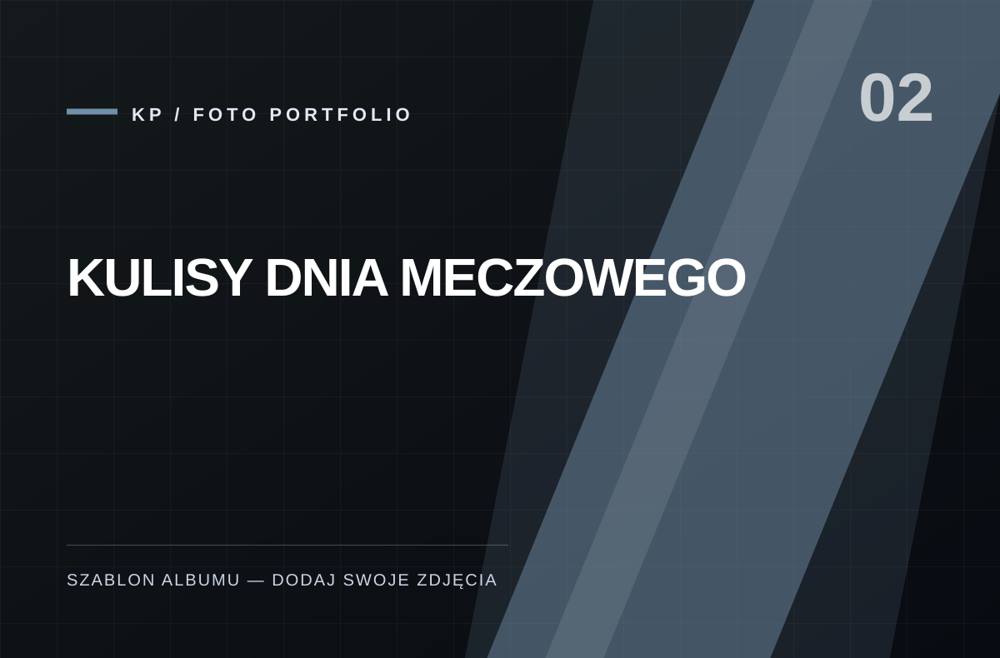
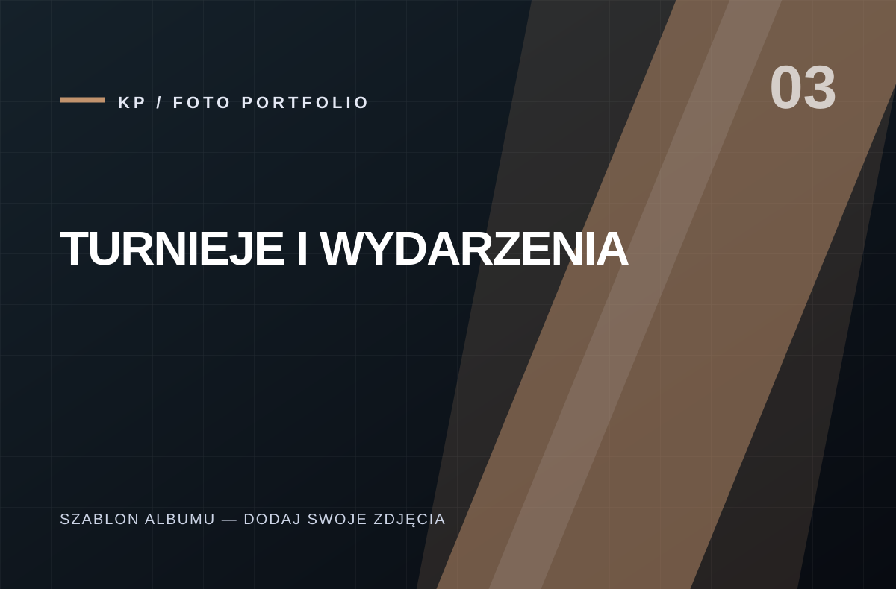

Meczowe fotoreportaże
Pojedynczy mecz = osobny album. Podział na rozgrywki, sezon i zespół.
OTWÓRZ ALBUM ↗Historie opowiedziane kadrami. Od intensywności meczu, przez kulisy wydarzenia, po portrety, które zostają w pamięci.
Emocje, detale i ludzie. Wybierz historię, którą chcesz zobaczyć z bliska.

Pojedynczy mecz = osobny album. Podział na rozgrywki, sezon i zespół.
OTWÓRZ ALBUM ↗



W KP Services możesz połączyć pracę studia KACPY z technologią, zarządzaniem i obsługą wydarzeń. Po przejściu do konfiguratora obszar Media & Communication będzie już zaznaczony.
ZBUDUJ ZAKRES WSPÓŁPRACY ↗